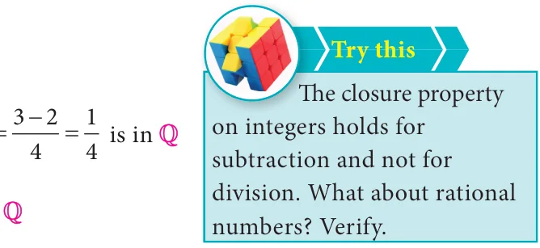

<!DOCTYPE html>
<html lang="en">
<head>
<meta charset="UTF-8">
<meta name="viewport" content="width=device-width,initial-scale=1">
<title>1.5 Properties of Rational Numbers — Numbers</title>
<meta name="description" content="Class 8 Mathematics · Numbers · 1.5 Properties of Rational Numbers">
<link rel="icon" href="data:image/svg+xml,<svg xmlns='http://www.w3.org/2000/svg' viewBox='0 0 100 100'><text y='.9em' font-size='90'>📘</text></svg>">
<link rel="stylesheet" href="../../../assets/book.css">
<link rel="stylesheet" href="https://cdn.jsdelivr.net/npm/katex@0.16.11/dist/katex.min.css" crossorigin="anonymous">
</head>
<body>
<header class="topbar">
<div class="topbar-in">
  <div class="crumb">
    <span class="c1"><a href="../../../index.html">Library</a> · <a href="../../index.html">Class 8 Mathematics</a></span>
    <span class="c2">Numbers · 1.5 Properties of Rational Numbers</span>
  </div>
  <a class="tb-btn" data-nav="prev" href="../../01-numbers/06-exercise-1.2/index.html" title="Exercise 1.2">←</a>
  <details class="drawer"><summary class="tb-btn" title="Sections in this chapter">☰</summary>
<div class="drawer-panel"><div class="dh">Numbers</div><a href="../01-chapter-opener/index.html">Chapter opener; 1.1 Introduction</a><a href="../02-rational-numbers-1.2/index.html">1.2 Rational Numbers</a><a href="../03-exercise-1.1/index.html">Exercise 1.1</a><a href="../04-basic-arithmetic-operations-on-rational-numbers-1.3/index.html">1.3 Basic Arithmetic Operations on Rational Numbers</a><a href="../05-word-problems-on-the-basic-operations-1.4/index.html">1.4 Word Problems on the basic operations</a><a href="../06-exercise-1.2/index.html">Exercise 1.2</a><a href="../07-properties-of-rational-numbers-1.5/index.html" aria-current="page">1.5 Properties of Rational Numbers</a><a href="../08-exercise-1.3/index.html">Exercise 1.3</a><a href="../09-introduction-to-square-numbers-1.6/index.html">1.6 Introduction to Square Numbers</a><a href="../10-square-root-1.7/index.html">1.7 Square Root</a><a href="../11-exercise-1.4/index.html">Exercise 1.4</a><a href="../12-cubes-and-cube-roots-1.8/index.html">1.8 Cubes and Cube Roots</a><a href="../13-exercise-1.5/index.html">Exercise 1.5</a><a href="../14-exponents-and-powers-1.9/index.html">1.9 Exponents and Powers</a><a href="../15-exercise-1.6/index.html">Exercise 1.6</a><a href="../16-exercise-1.7/index.html">Exercise 1.7</a><a href="../17-summary/index.html">SUMMARY</a></div></details>
  <a class="tb-btn" data-nav="next" href="../../01-numbers/08-exercise-1.3/index.html" title="Exercise 1.3">→</a>
  <button class="tb-btn" data-theme-toggle title="Toggle light / dark" aria-label="Toggle light or dark theme">◐</button>
</div>
<div class="progress"><span style="width:6.5%"></span></div>
</header>
<main class="wrap">
<div class="sec-head">
  <p class="eyebrow"><a href="../index.html">Chapter 1 · Numbers</a></p>
  <h1>1.5 Properties of Rational Numbers</h1>
  <p class="sec-meta">Textbook pages 20–24 · 7 figures</p>
</div>
<article class="prose">
<p>Some properties listed here below will be of good use in solving problems.</p>
<h3 id="s-1-5-1-closure-property-for-the-collection-of-rational-numb">1.5.1 Closure property for the collection of rational numbers</h3>
<ul class="qlist">
<li><span class="mk">i)</span><span class="lt">Closure property for Addition</span></li>
</ul>
<p>For any two rational numbers a and b, the sum \(a + b\) is also a rational number.</p>
<ul class="qlist">
<li><span class="mk">ii)</span><span class="lt">Closure property for Multiplication</span></li>
</ul>
<p>For any two rational numbers a and b, the product ab is also a rational number.</p>
<p>Illustration</p>
<figure class="fig"></figure>
<p>Take \(a = \frac{3}{4}\) and \(b \frac{1}{2}\) Now, a b 34 21 34</p>
<div class="mathblock"><p>Also, \(a b \frac{313}{428}\) is in</p></div>
<h3 id="s-1-5-2-commutative-property-for-the-collection-of-rational-">1.5.2 Commutative property for the collection of rational numbers</h3>
<ul class="qlist">
<li><span class="mk">i)</span><span class="lt">Commutative property for Addition</span></li>
</ul>
<p>For any two rational numbers a and b, \(a + b = b + a\).</p>
<ul class="qlist">
<li><span class="mk">ii)</span><span class="lt">Commutative property for Multiplication</span></li>
</ul>
<p>For any two rational numbers a and b, ab = ba (ab means \(a \times b\) and ba means \(b \times\) a).</p>
<p>Illustration</p>
<p>Take a and \(b = 3\)</p>
<div class="mathblock"><p>\(\frac{7}{8} 5\)</p></div>
<figure class="fig side-fig"></figure>
<p>Now, a b 7 3 7 5 3 8 35 24 11 8 5 40 40 40 Also, b a 35 ( )87 3 8 40( )7 5 244035 4011 Here, we find that \(a + b = b + a\) and hence addition is commutative.</p>
<figure class="fig table-fig wide"></figure>
<p>Further,</p>
<figure class="fig side-fig"></figure>
<figure class="fig"></figure>
<p>Also,</p>
<p>Here, we find that \(a \times = \times\) and hence multiplication is commutative.</p>
<h3 id="s-1-5-3-associative-property-for-the-collection-of-rational-">1.5.3 Associative property for the collection of rational numbers</h3>
<ul class="qlist">
<li><span class="mk">i)</span><span class="lt">Associative property for Addition</span></li>
</ul>
<p>For any three rational numbers a, b, and c, \(a +\) (b + c) = (a + b) \(+ c\)</p>
<ul class="qlist">
<li><span class="mk">ii)</span><span class="lt">Associative property for Multiplication</span></li>
</ul>
<p>For any three rational numbers a, b, and c, a(bc) = (ab)c</p>
<p>Illustration</p>
<p>Take rational numbers a,b, as \(c a = \frac{ - 1}{2}\) , \(b = 35\) and \(c = \frac{ - 7}{10}\) Now, \(a b \frac{1356}{251010}\) (equivalent rationals with common denominators)</p>
<div class="mathblock"><p>\(a+b = \frac{ - +561}{1010} =\) (a \(+ b)+ c = 101 +\)  \(10 -\) 7= \(110 - 7 = 10 - 6 = - 53 ...(1)\) Also, \(b + c = 3 + - 7 = 6 + - 7 = 6 - 7 = - 1\)</p></div>
<div class="mathblock"><p>\(a+(b+c) = 1 1 5 1 5 1 6 3 ...(2)\)</p></div>
<p>2 10 10 10 10 10 5 (1) and (2) shows that ( \(+ )+ = +\) ( + ) is true for rational numbers.</p>
<p>Similarly, \(a \times =\)</p>
<div class="mathblock"><p>( \(\times\) ) \(\times = - \times - = - \times - \times = ...(3)\)</p></div>
<p>Also, \(\times = \times - = \times - = - \times\)</p>
<figure class="fig"></figure>
<div class="mathblock"><p>\(\times\) ( \(\times\) ) \(= ...(4)\)</p></div>
<p>(3) and (4) shows that ( \(\times\) ) \(\times = \times\) ( \(\times\) ) Thus, the associative property is true for addition and multiplication of rational numbers.</p>
<h3 id="s-1-5-4-identity-property-for-the-collection-of-rational-num">1.5.4 Identity property for the collection of rational numbers</h3>
<ul class="qlist">
<li><span class="mk">i)</span><span class="lt">Identity property for Addition</span></li>
</ul>
<p>For any rational number a, there exists a unique rational number 0 such that</p>
<div class="mathblock"><p>\(0 + a = a = a + 0\) .</p></div>
<ul class="qlist">
<li><span class="mk">ii)</span><span class="lt">Identity property for Multiplication</span></li>
</ul>
<p>For any rational number a, there exists a unique rational number 1 such that</p>
<div class="mathblock"><p>\(1 \times a = a = a \times 1\).</p></div>
<p>Illustration</p>
<p>Take a that is, a . Now 3 0 3 0 3 (Isn’t it?)</p>
<div class="mathblock"><p>\(\frac{3}{7} \frac{3}{7} 7 7 7\)</p></div>
<p>Hence, 0 is the additive identity for \(\frac{ - 3}{7}\) Also, 3 1 3 1 3 (Isn’t it?) 7 7 7 Hence, 1 is the multiplicative identity for \(\frac{ - 3}{7}\)</p>
<h3 id="s-1-5-5-inverse-property-for-the-collection-of-rational-numb">1.5.5 Inverse property for the collection of rational numbers</h3>
<ul class="qlist">
<li><span class="mk">i)</span><span class="lt">Additive Inverse property</span></li>
</ul>
<p>For any rational number a, there exists a unique rational number \(- a\) such that \(a +\) ( - a) = ( - a) \(+ a = 0\). Here, 0 is the additive identity.</p>
<ul class="qlist">
<li><span class="mk">ii)</span><span class="lt">Multiplicative Inverse property</span></li>
</ul>
<p>For any rational number b, there exists a unique rational number \(\frac{1}{b}\) such that \(b \times = \times b =1\). Here, 1 is the multiplicative identity.</p>
<div class="mathblock"><p>\(\frac{11}{bb}\)</p></div>
<p>Illustration</p>
<p>Take \(a \frac{11}{23}\) Now, a  \(\frac{1111}{2323}\) </p>
<div class="mathblock"><p>So, \(a +\) ( - a) \(= 0\)</p></div>
<div class="mathblock"><p>Also, ( \(- a)+ a = 11 11 11 11 0 0\)</p></div>
<div class="mathblock"><p>\(\therefore a +\) ( - a) = ( \(- a)+ a = 0\) is true.</p></div>
<p>Also, take \(b \frac{17}{29}\) . Now, \(\frac{12929}{b1717} b \times \frac{1}{b} = \frac{1729}{2917} 1\). Also, \(\frac{1}{b} \times b = \frac{2917}{1729} 1\)</p>
<div class="mathblock"><p>\(\therefore b \times \frac{11}{bb} = \times b =1\) is true.</p></div>
<h3 id="s-1-5-6-distributive-property-for-the-collection-of-rational">1.5.6 Distributive property for the collection of rational numbers</h3>
<p>Multiplication is distributive over addition for the collection of rational numbers.</p>
<p>For any three rational numbers a, b and c, the distributive law is a b c  a b a c</p>
<p>Illustration</p>
<p>Take rational numbers a,b,c as a 7 , \(b = 11\) and c 14 9 18 27</p>
<div class="mathblock"><p>Now, \(b+c = b c 11 14 33 28 33 28 5\)</p></div>
<p>18 27 54 54 54 54 (equivalent rationals with common denominators)</p>
<div class="mathblock"><p>\(\therefore a \times (b+c) = 7 5 7 5 35 ...(1)\)</p></div>
<div class="mathblock"><p>Also, \(a \times b = 7 11 7 11 77\)</p></div>
<div class="mathblock"><p>\(a \times c = 7 14 7 14 98\)</p></div>
<div class="mathblock"><p>\(\therefore\) (a \(\times b)+\) (a \(\times\) c) \(= - 77 + 98 9 \times 9 \times 2 9 \times 9 \times 3 = \frac{ - 77 \times 3+98 \times 2}{9 \times 9 \times 2 \times 3} = - 231486+196 = - 48635 ...(2)\)</p></div>
<p>(1) and (2) shows that \(a \times\) (b + c) = (a \(\times b)+\) (a \(\times\) c) .</p>
<p>Hence, multiplication is distributive over addition for the collection of rational numbers.</p>
</article>
<nav class="pager"><a class="" data-nav="prev" href="../../01-numbers/06-exercise-1.2/index.html"><span class="dir">← Previous</span><span class="t">Exercise 1.2</span><span class="ch">Numbers</span></a><a class="nx" data-nav="next" href="../../01-numbers/08-exercise-1.3/index.html"><span class="dir">Next →</span><span class="t">Exercise 1.3</span><span class="ch">Numbers</span></a></nav>
</main><footer class="site">Generated from the source textbook PDFs · text, figures and exercises belong to their respective publishers.</footer><script defer src="https://cdn.jsdelivr.net/npm/katex@0.16.11/dist/katex.min.js" crossorigin="anonymous"></script>
<script defer src="https://cdn.jsdelivr.net/npm/katex@0.16.11/dist/contrib/auto-render.min.js" crossorigin="anonymous"
  onload="renderMathInElement(document.body,{delimiters:[
    {left:'\\(',right:'\\)',display:false},
    {left:'$$',right:'$$',display:true},
    {left:'\\[',right:'\\]',display:true}],throwOnError:false,ignoredTags:['script','noscript','style','textarea','pre','code']})"></script>
<script src="../../../assets/book.js"></script>
<script defer src="../../../../assets/search.js"></script>
<script defer src="../../../../assets/screenshot.js"></script>
</body>
</html>
